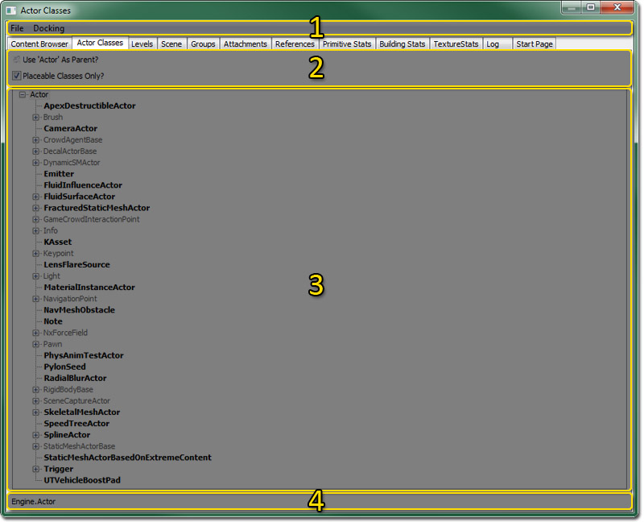

UDN
Search public documentation:
ActorsBrowserReferenceKR
English Translation
日本語訳
中国翻译
Interested in the Unreal Engine?
Visit the Unreal Technology site.
Looking for jobs and company info?
Check out the Epic games site.
Questions about support via UDN?
Contact the UDN Staff
日本語訳
中国翻译
Interested in the Unreal Engine?
Visit the Unreal Technology site.
Looking for jobs and company info?
Check out the Epic games site.
Questions about support via UDN?
Contact the UDN Staff
UE3 홈 > 언리얼 에디터와 툴 > 액터 브라우저 참고서
액터 브라우저 참고서
문서 변경내역: Jason Lentz (Demiurge Studios) 작성. Jeff Wilson 업데이트. 홍성진 번역.
개요
액터 클래스 브라우저 열기
액터 클래스 브라우저 인터페이스

메뉴바
파일
- 패키지 열기 - 여기서 언리얼스크립트 컴파일된 코트 .u 패키지를 열 수 있습니다.
- 모든 스크립트 내보내기 - 이 옵션은 모든 클래스를 나중에 리빌드할 수 있는 언리얼스크립트 클래스 .uc 파일로 내보냅니다.
도킹
- 붙이기 - 이 옵션은 현재 떠다니는 브라우저를 메인 브라우저 창에 합칩니다. 현재 브라우저가 도킹된 상태면 체크되어 표시됩니다.
- 떼기 - 이 옵션은 현재 브라우저를 메인 브라우저 창에서 떼어내어 독립적으로 떠다니는 브라우저로 만듭니다. 현재 브라우저가 떠다니는 상태면 체크되어 표시됩니다.
- 브라우저 복제 - 현재 브라우저의 복제본을 만드는 옵션입니다.
- 브라우저 삭제 - 현재 브라우저를 제거하는 옵션입니다. 복제된 브라우저 창에서만 사용가능합니다.
툴바
- 액터를 부모로 사용할까요? - 이 박스를 체크하면 아래에 표시되는 액터는 "Actor"를 최상위 레벨에 두고 시작합니다. 체크하지 않으면 "Object"가 사용됩니다.
- 놓을수 있는 클래스만? - 이 박스를 체크하면 배치가능 클래스가 없어 놓을 수 없는 클래스는 전부 액터 트리에서 쳐냅니다. 놓을수 있는 액터는 액터 트리에 두껍게 표시됩니다.
액터 트리
액터 트리에는 사용가능한 액터가 전부 표시됩니다. 월드에 액터를 놓으려면 액터 트리에서 선택한 다음 놓으려는 뷰포트에 우클릭하면 됩니다. 우클릭하여 뜨는 메뉴의 윗부분에 보면 "_선택된 액터_ 여기에 추가" 라는 옵션이 보일 것입니다. 보면 어떤 액터는 두껍게 표시되고 어떤건 아닙니다. 두껍게 표시되는 액터는 놓을 수 있는 액터이고, 나머지는 클래스의 구조용으로 있는 것입니다. 액터 옆의 + 표시 상자를 클릭하면 액터 트리의 가지가 펼쳐져 그 아래 액터가 전부 표시됩니다. 액터 옆의 - 표시 상자를 클릭하면 액터 트리의 가지를 접혀 그 아래 액터가 전부 숨겨집니다.맥락 메뉴
 액터 트리의 클래스에 우클릭하면 맥락 메뉴가 표시됩니다. 이 메뉴에는 다음과 같은 옵션이 있습니다:
액터 트리의 클래스에 우클릭하면 맥락 메뉴가 표시됩니다. 이 메뉴에는 다음과 같은 옵션이 있습니다:
- 아키타입 생성... - 현재 클래스를 기반으로 하여 콘텐츠 브라우저를 통해 수정용으로 접근할 수 있는 새 아키타입을 생성할 수 있는 옵션입니다.
- 소스 코드 보기 - 이 옵션은 현재 클래스에 대한 UnrealScript 클래스를 운영체제의 디폴트 텍스트 에디터로 엽니다. 열리는 것은 임시 파일로, 코드를 빨리 확인하기 위함입니다. 여기서 변경할 수는 없습니다.